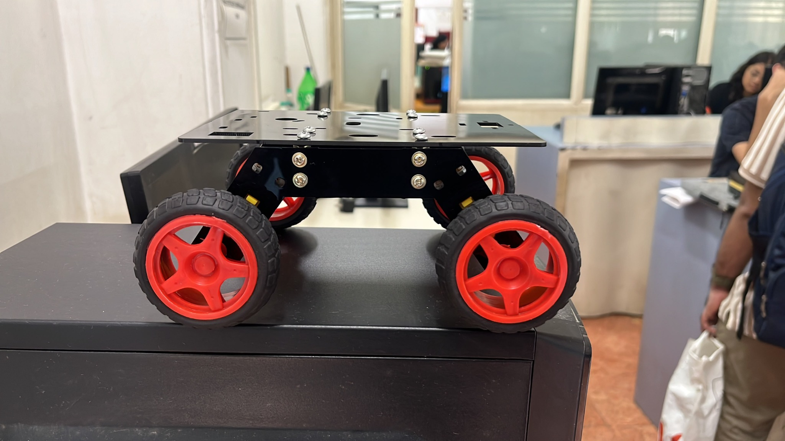
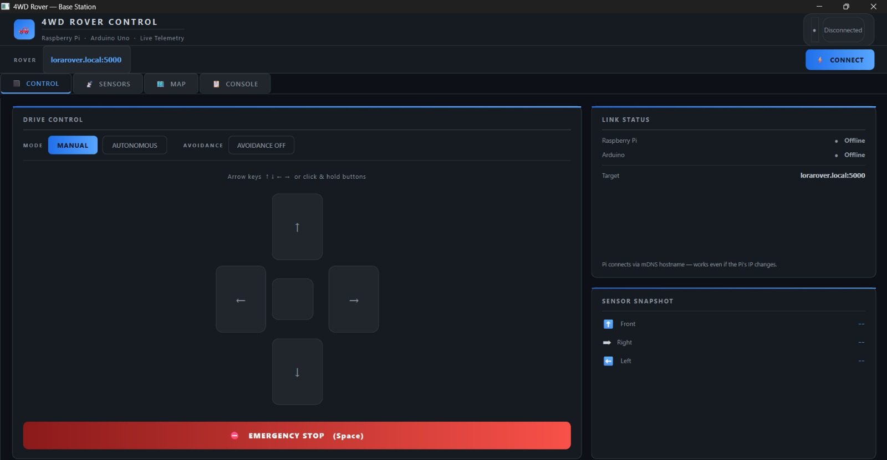
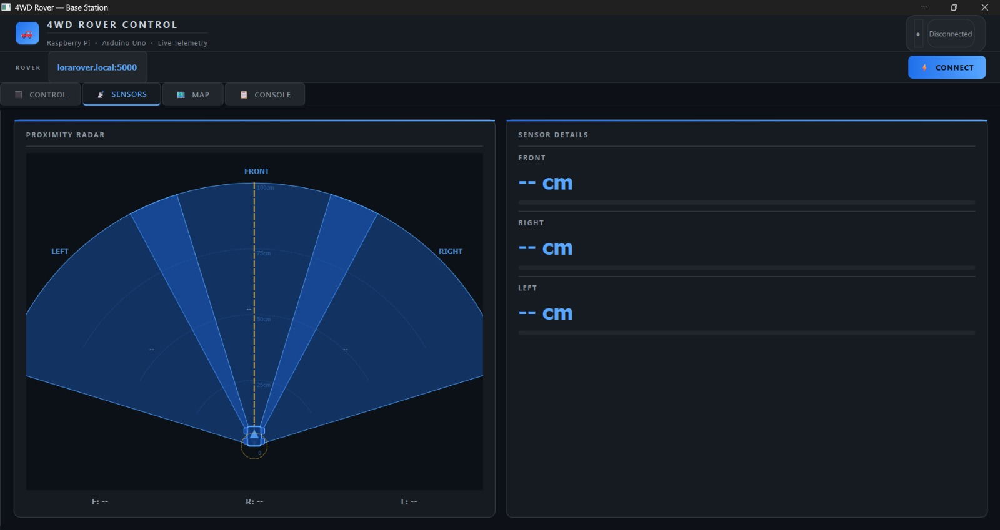
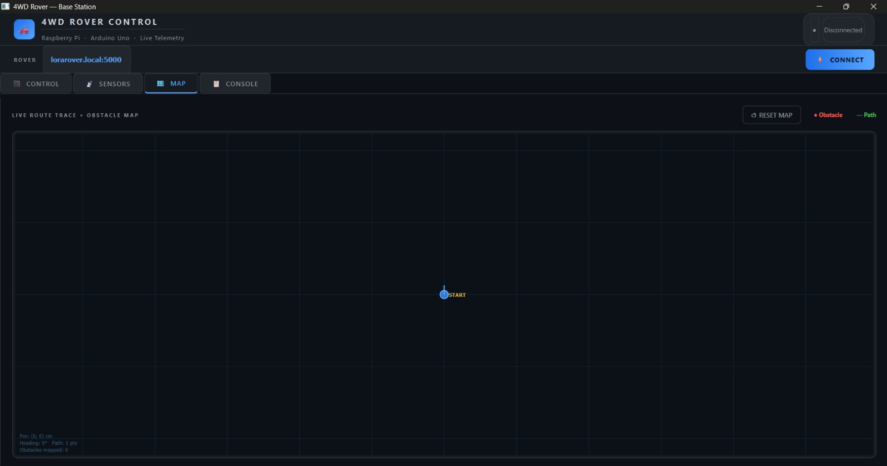

Autonomous Tactical Unmanned Ground Rover
A remotely operated and autonomous mobile rover designed for destination-based movement, obstacle avoidance, environmental monitoring and operator awareness through a centralized graphical interface.
Project overview
The rover supports both manual and autonomous operation. In manual mode, the operator sends forward, backward, left, right and stop commands through the graphical user interface, with an emergency-stop function available for immediate shutdown.
In autonomous mode, the operator can select a destination on an estimated map workspace. The rover uses route visualization and nearby obstacle information to support movement toward the selected point. The map represents estimated rover/path position; the current system is not GPS- or SLAM-based.
System architecture & technical focus
LOW-LEVEL CONTROL
Arduino firmware handles motor control, sensor acquisition and rule-based obstacle-avoidance operations.
HIGH-LEVEL PROCESSING
Raspberry Pi software handles data processing, GUI operation, map/path visualization and planned ML inference.
OBSTACLE SENSING
Three HC-SR04 sensors provide front, left and right proximity information. The current safety logic uses approximately 15 cm as its critical distance.
WIRELESS LINK
RA-02 LoRa modules provide the communication layer between the rover and remote/base-station functions. Range and packet performance remain unverified.
Capabilities
- Manual directional control with emergency stop and connection-status feedback.
- Autonomous destination-based path visualization and estimated rover movement.
- Rule-based obstacle response using front, left and right ultrasonic measurements.
- Ultrasonic radar visualization for nearby obstacle awareness.
- DHT22 temperature/humidity sensing and MQ-5 gas-related environmental sensing.
- Temperature anomaly alerts, heatmap visualization and machine-learning support for abnormal environmental patterns.
- PySide6 operator interface for control, monitoring, route display and system status.
Work performed and current status
- Completed individual DHT22, MQ-5, HC-SR04, motor and motor-driver testing.
- Completed rover assembly, Arduino motor control and Arduino-Raspberry Pi serial communication testing.
- Developed manual/autonomous GUI controls, emergency stop, connection status, radar and map views.
- Completed machine-learning model training and individual LoRa module and antenna testing.
- Further DHT22/MQ-5 GUI integration, Raspberry Pi ML execution, complete LoRa integration and final end-to-end validation remain under integration or refinement.
- Obstacle-avoidance testing produced 4 successful trials out of 16, a 25% success rate. This demonstrates the implemented logic but also indicates a significant need for optimization before dependable autonomous operation can be claimed.
Technology stack
Project media




